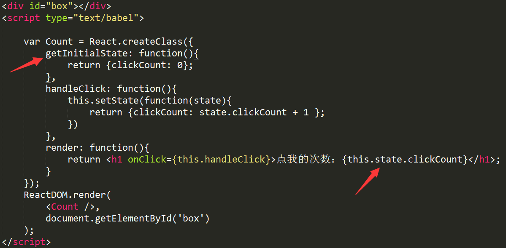

react组件API
- 设置状态：setState
- setState(object,nextState[,function callback])
- 参数说明：
- nextState将要设置的新状态，该状态会和当前的state合并
-
callback,回调函数。该函数会在setState设置成功,且组件重新渲染之后调用,
合并nextState和当前state，并重新渲染组件。setState是react事件处理函数中
和请求回调函数中触发UI更新的主要方法。
- 
-
getInitialState 方法用于定义初始化状态，也就是一个对象，这个对象可以通过
this.state属性获取。
当用户点击组件,导致状态改变时，this.setState就修改状态值，每次修改之后就自动
调用this.render,再次渲染组件。
- 替换状态：replaceState
- replaceState(object,nextState[,function callback])
- nextState将要设置新的状态，替换当前的state
- callback 可选参数，回到函数，该函数在replaceState设置成功后，且组件重新渲染后调用
- 设置属性：setProps
- setProps(object nextProps[,function callback])
- nextProps将要设置新的属性，该状态会和当前的props合并
- callback 回调函数，可选参数，该函数会在setProps设置成功，且组件重新渲染之后调用，
- 替换属性：replaceProps
- 强制更新：forceUpdate
- 获取DOM节点：findDOMNode
- 判断组件挂载状态：isMounted
- isMounted()方法用于判断组件是否挂载到DOM中